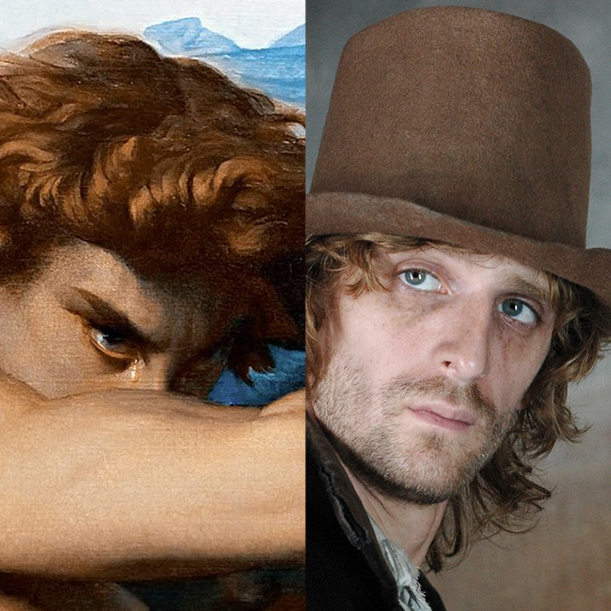
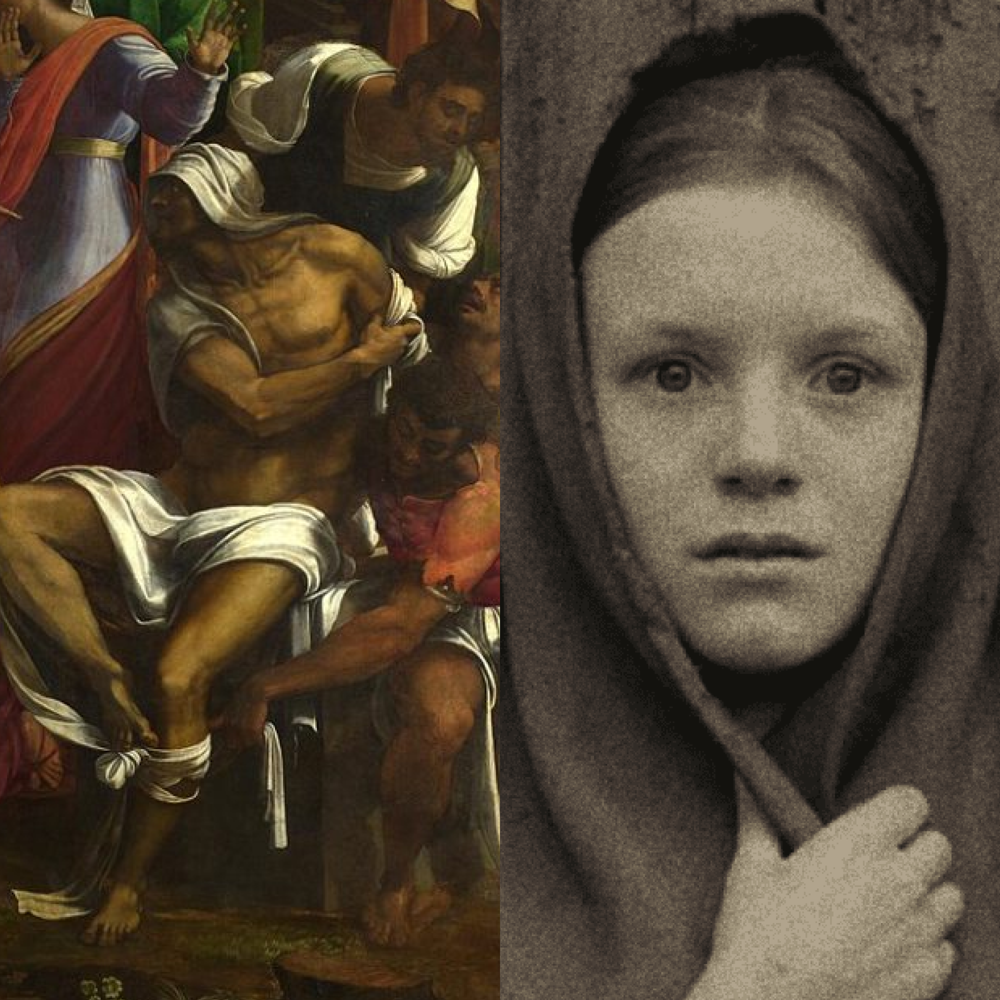

Библейские мотивы
Ознакомьтесь с отсылками на библейские сюжеты в романе "Преступление и наказание"
Общеизвестно, что именно Евангелие было главной книгой в сердце Достоевского. Узнайте, как священное писание повлияло на роман Фёдора Михайловича
Числовая символика
Определите скрытое значение обычных чисел в романе
!
Евангелие автор любил читать с ранних лет. Евангелие остается главной (и единственной) для художника книгой и на каторге. Из Евангелия он черпает духовные силы. Наиболее значимыми в романе оказываются числа 3, 7 и 30. Эти числа, исторически восходя к западной нумерологии, соотносятся у Ф.М.Достоевского с Евангельским текстом и получают христианское содержание.
3
В традиционной символике число «3» имеет позитивный смысл, обозначает решение конфликта.
Практически тот же самый смысл — получает число три в христианском богословии. В Священном Писании «тройка»
считается особенной, потому что указывает на три главных добродетели.
В романе «Преступление и наказание»
число «3» приобретает противоречивый смысл. В начале романа это число из позитивного и светлого превращается в
негативное и темное. А именно: в символ преступления, греха. Поскольку Раскольников трижды бьет старуху топором.
Над его головой трижды звенит жестяной колокольчик. Дуня стреляет в Свидригайлова, находясь от него всего лишь
в трех шагах. Однако по мере развития сюжета символика тройки в романе начинает меняться. Раскольникову
приходится выдержать три разговора с Порфирием Петровичем, прежде чем явиться с повинной в полицию.
Главный герой приходит к Соне, в каморке у которой три окна. Три пятипроцентных билета (3 тысячи)
вручает Соне Свидригайлов, чтобы та могла начать новую жизнь.
Таким образом, число три в романе автора
проходит определенную эволюцию. В начале оно означает преступление. В конце — спасение, новую жизнь.
7
В традиционной символике семерка в основном понимается как позитивный символ.
Семь обозначает совершенный порядок. В христианстве число семь обозначает полноту, совершенство. Христос насыщает
народ семью хлебами из семи полных корзин, семь даров Святого Духа дается христианам.
Однако в романе Ф. М. Достоевского число
«7» вновь трактуется противоречиво. В начале романа это число определяет идею смертного греха, погибели.
Семь глав включает в себя первая часть романа (в которой происходит убийство). До дома старухи оказывается
730 шагов. В семь часов Раскольников узнает, что сестры старухи, Лизаветы, в вечер преступления дома не будет.
Зато далее семерка понимается уже не как символ гибели, но как спасительное число. Семилетним мальчиком
представляет себя Раскольников во сне. В дом Капернаумова, отца семерых детей, герой приходит, чтобы пережить
духовное воскрешение. Семь лет каторги представляются ему в финале началом новой жизни. Иначе
говоря, число семь в финале становится символом духовного воскрешения и перерождения.
30
Наконец, число «30». В Новом Завете это число обозначает идею предательства, потому что Иуда
предает Христа за 30 сребренников.
Значение предательства можно найти и в романе. Марфа Петровна выкупает
Свидригайлова из долговой ямы за 30 тысяч, а он предает ее. Соня отдает отцу последние 30 копеек на похмелье.
Смертельная гордыня
Узнайте, с кем литературоведы сравнивают главного героя

Из-за антигуманной теории героя, образ Раскольникова часто сравнивают с образом Люцифера: чистый и праведный ангел из-за своей грешной гордыни, идущей в разрез со священными заветами, был изгнан в ад. Ад, в случае Родиона Романовича - пучина душевных страданий. Он мечется, страдает, плохо спит. Разум героя находится в состоянии глубокого исступления. После преступления Раскольников, беспомощный и болезненный, находится в собственном аду, а рай праведной и христианской жизни для него на долгое время утерян.
Воскрешение Лазаря и Соня Мармеладова
Кто помог встать главному герою на правильный путь?

Достоевский даёт своему герою шанс в лице Сони Мармеладовой. Главное идеологическое столкновение теории гуманизма и философии сверхчеловека происходит именно в её квартире. Ключевым моментом этого эпизода является чтение Соней “Воскресения Лазаря”. Глава о воскрешении мёртвого друга Христова зажигает огонь надежды в сердце грешника Родиона. Достоевский проводит прямую параллель: как Лазарь возвращается к жизни через веру в Бога, так и он может вернуться к блаженной, безгрешной жизни через раскаяние. Этот переломный момент и начинает постепенное возрождение души героя. На следующий день после него, Родион рассказывает Соне Мармеладовой о своём смертном грехе.